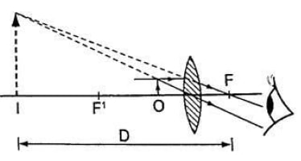
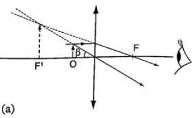
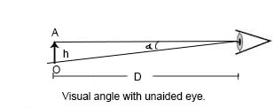
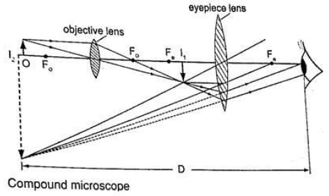
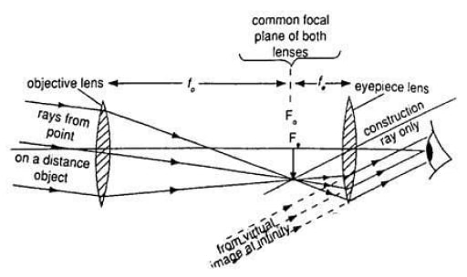
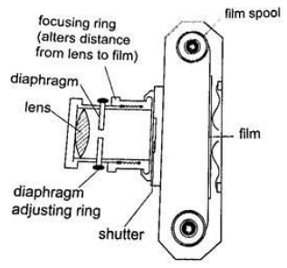
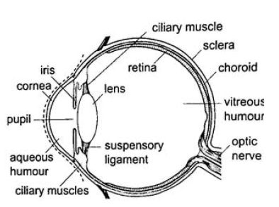
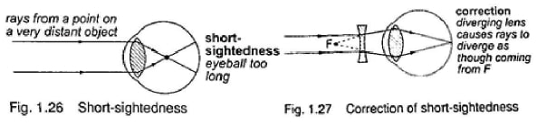
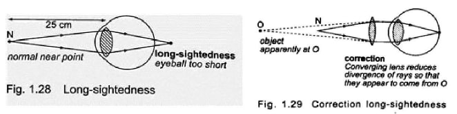

- Simple microscope – it is also referred to as magnifying glass where the image appears clearest at about 25 cm from the eye. This distance is known as the least distance of distinct vision (D) or near vision.

Magnification in a Simple Microscope- Magnification produced depends on the focal length of the lens. Lens of short focal give greater magnification than those of long focal length.
- The angle β subtended by the image at the eye is much greater than α which is the angle that the object would subtend at the eye when viewed without the lens.
- The ratio of the β toα is known as angular magnification or magnifying power of an instrument.
- The angular magnification is equal to linear magnification.


- To study the features of small animals in biology
- To look closely at small print on a map
- To observe crystals in physics and chemistry
- For forensic investigation by the police
- Compound microscope - It consists of two lenses with one nearer the object called the objective lens and the other nearer the eye called the eyepiece lens.

Uses of Compound Microscope- Used to observe Brownian motion in science
- To study micro-organisms and cells in biology
- Analyze laboratory tests in hospital.
- The astronomical telescope – It is used to view distant stars. It consists of two lenses; objective and eye-piece lenses. The objective lens has a large focal length while the eye-piece lens has a much shorter focal length.
 - The camera – consists of a converging lens system, clicking button, shutter, diaphragm and a mounting base for the film all enclosed in a light proof box. The distance is adjusted to obtain a clear focus. The diaphragm has a hole called the aperture with an adjusting control knob to control the amount of light entering the camera. The shutter opens to allow light and close at a given time interval.

Uses of a Camera- The sine camera is used to make motion pictures
- High speed cameras are used to record movement of particles
- Close circuit television cameras (CCTV) are used to protect high security installations like banks, supermarkets etc.
- Digital cameras are used to capture data that can be fed to computers.
- Human eye – It consists of a transparent cornea, aqueous humour and a crystal-like lens which form a converging lens system. The ciliary muscles contract or relax to change the curvature of the lens. Though the image fo the image as upright. For distant objects ciliary muscles relax while near objects it contracts to control the focal length and this is known as accommodation. When at 25 cmaway an object appears clearest and this is known as least distance of vision or near point.

Common Eye Defects- Short sightedness or myopia – result of a bulging cornea or an elongated eyeball. Images of distant objects form at locations in front of the retina. The defect is corrected by placing a concave (diverging) lens infront of the eye
 - Long sightedness or hypermetropia – images are formed beyond the retina. The defect is corrected by placing a converging (convex) lens in front of the eye
 - Presbyopia – this is the inability of the eye to accommodate and this occurs as the eye ages due to the weakening of the ciliary muscles. It can be corrected by the use a pair of spectacles.
- Astigmatism – this is a defect where the eye has two different focal lengths as a result of the cornea not being spherical. Corrected by the use of cylindrical lens.
- Colour blindness – caused by deficiency of colour detecting cells in the retina.
- Short sightedness or myopia – result of a bulging cornea or an elongated eyeball. Images of distant objects form at locations in front of the retina. The defect is corrected by placing a concave (diverging) lens infront of the eye
Thin Lences